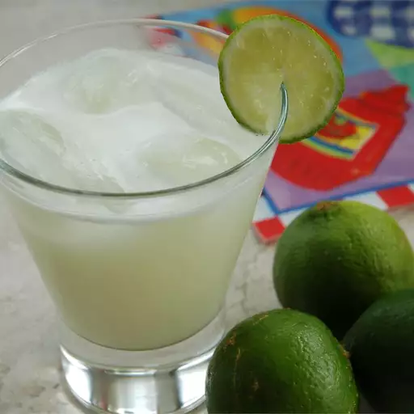

Brazilian Lemonade

Description
This Brazilian lemonade recipe actually uses limes! It is best served immediately.
Ingredients
- 2 limes
- 3 cups of water
- 1/2 cup of sugar
- 3 tablespoons sweetened condensed milk
- ice cubes
Steps
- Wash limes thoroughly. Cut off the ends and slice into eight wedges.
- Place limes in a blender with water, sugar, sweetened condensed milk, and ice; pulse 5 times, or until smooth. Strain through a fine mesh strainer to remove rinds. Serve over ice.